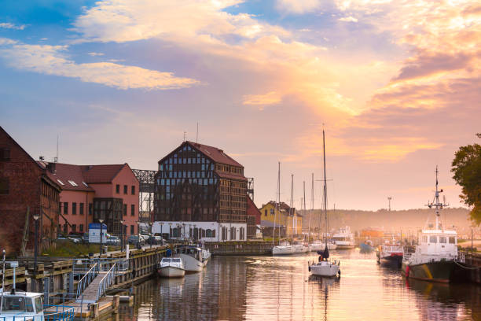

Klaipėda Klaipėda trečias pagal gyventojų skaičių ir plotą Lietuvos miestas, įsikūręs Vakarų Lietuvoje, Pajūrio žemumoje, ties Kuršių marių ir Baltijos jūros santakos vieta. Miestas taip pat yra Klaipėdos apskrities administracinis centras. Svarbiausias Vakarų Lietuvos pramonės centras,[3] kelių, geležinkelių ir jūrų transporto mazgas. 2019 m. pab. sudarytame savivaldybių gerovės indekso reitinge Klaipėdos miestui teko trečia vieta.[4]
Klaipėda Senasis Klaipėdos pavadinimas Memel yra vandenvardinės kilmės. Manoma, kad vietinės baltų gentys (skalviai ir galbūt kuršiai) šitaip vadino Nemuno tėkmę žemupyje, o Vokiečių ordinas šį pavadinimą tik perėmė. Piliai ir miestui toks vardas buvo suteiktas, kadangi manyta Marių sąsmauką ties Dangės upe esant Nemuno žiotimis.Kada atsiranda žemaitiškas pavadinimas Klaipėda, nėra aišku.Šaltiniuose jis minimas tik nuo XV a. pradžios: Vytauto laiške 1413 m. rašoma Caloypede, 1420 m. Kryžiuočių ordino derybų su Vytautu santraukoje kalbama apie castrum Memel alias Klawppeda Po Pirmojo pasaulinio karo: 1920 m., pagal Versalio sutartį, Klaipėda buvo perduota Lietuvai, tačiau Vokietija ir toliau siekė kontroliuoti šį miestą. 1923 m. įvyko Klaipėdos sukilimas, kai lietuvių kariai perėmė miestą ir įtvirtino jo priklausomybę Lietuvai.Antrojo pasaulinio karo laikotarpis: Po Antrojo pasaulinio karo Klaipėda atiteko Sovietų Sąjungai. Miestas buvo pavadintas Klaipėda, tačiau jis buvo stipriai paveiktas karo, ir daugelis vokiečių buvo iškeldinti.Po nepriklausomybės atgavimo: Po nepriklausomybės atkūrimo 1990 m., Klaipėda tapo svarbia Lietuvos uostamiestiu ir ekonominiu centru.

Klaipėdos miesto gyventojų skaičius 2025 m. sausio 1 d. buvo 160 885.
| Company | Contact | Country |
|---|---|---|
| Autorius | Martynas Mažvydas Vaitkūnas | Lietuva |
| Autorius | Vincas Mykolaitis-Putinas | Lietuva |